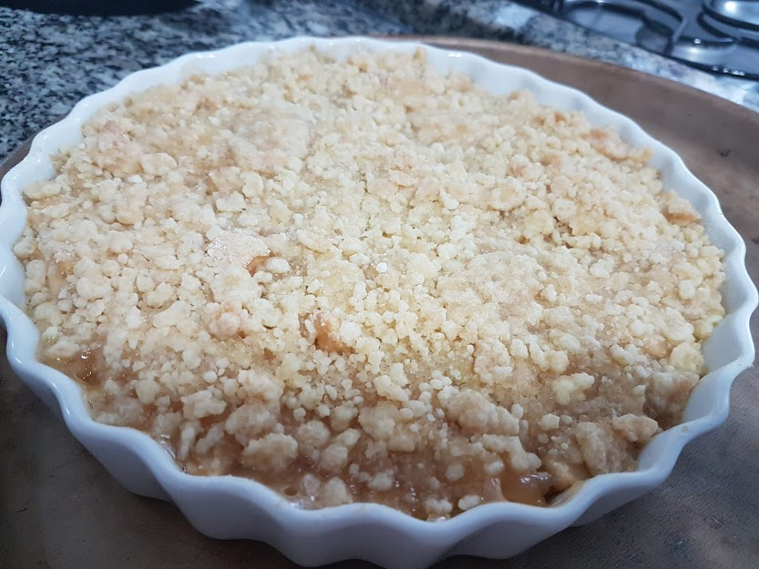

Olá pessoal!
Hoje teremos a famosa receita de Crumble by Tia Ivy 💁
Crumble

Ingredientes:
500g de maça
75 g de farinha
37.5 g de manteiga
125 g de açucar
1 colher de sopa de essência de Baunilha ou Canela
Modo de Fazer:
Descascar as maças e picar em quadradinhos pequenos
Em uma vasilha, esquentar a manteiga no micro-ondas até ficar metade liquida e metade sólida
Misturar a manteiga com a farinha e o açucar
Colocar nos potinhos as maças e ir colocando a baunilha delicadamente por cima
Cobrir com a misturar de farinha, açucar e manteiga
Levar no forno pré aquecido e assr a temperatura 200 graus até ficar douradinha
Bonne Appétit